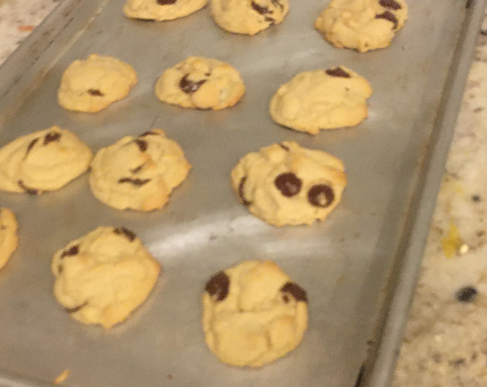

Home
Chocolate Chip Cookies

Description
This recipe has been mysteriously passed down from my Aunt Natalie, who has no recolletion of it or its distribution. However, the recipe card attributes it to her, and we will not disparage its integrity. I've halved the original, becuase the one time I tried to make a full batch the mass of dough began to warp my Bosch mixer.
They taste like normal chocolate chip cookies, no special ingredients, but it must nail the proportions or something becuase people love them. In high school, these and desperate hope made up my plan for making friends.
Ingredients
- 2 Eggs
- 1 Cup Butter
- 1 Cup Brown Sugar
- 1 1/4 Cups Sugar
- 3/4 tsp Baking Soda
- 3/4 tsp Baking Powder
- 3/4 tsp Salt
- 1 1/2 tsp Vanilla
- 3 Cups Flour
- 1 Cup Choclate Chips
Steps
- Preheat oven to 375F.
- Beat eggs for 2-4 minutes.
- Add butter, brown sugar, and sugar and mix until creamy.
- Add dry ingredients and mix until almost combined.
- Fold in chocolate chips.
- Use common sense to distribute dough on baking pans.
- Bake @375 for 11 minutes.
- Let cool on the pan for a few minutes to solidify before transferring to cooling rack.